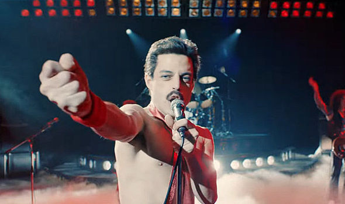
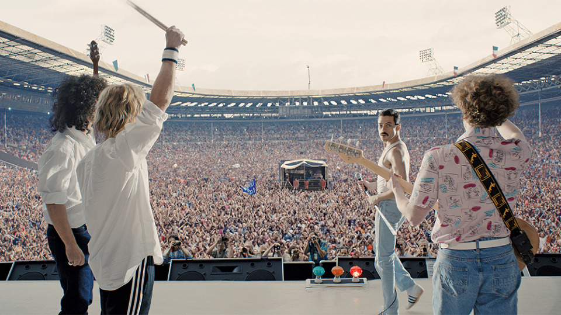
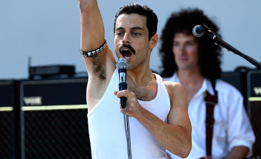

Hammer to Fall 가사 해석 - 필연적인 죽음에 대한 신나는 노래
게시: 2018-11-08T06:30:00+09:00

영화 '보헤미안 랩소디' 2번 본 기념으로 퀸의 노래 가사 한편 더 올립니다. 지난 6월부터 이 영화 개봉을 학수고대했는데, 그러면서도 혹시 기대가 큰 만큼 실망도 크면 어쩌나 하고 약간 걱정도 했습니다. 그러나 결과는, 적어도 제게는 매우 매우 만족스러웠습니다. 특히 하일라이트인 웸블리 공연 장면은 이미 2번 보았지만 또 보고 싶을 정도로 매우 감동적이었습니다. 진짜 프레디 머큐리는 아니지만 큰 화면에서 빵빵 터지는 사운드로 들으니 진짜 공연 현장에 있는 듯한 느낌이 들었어요. 유튜브로 보는 실제 프레디의 공연 녹화와는 또다른 감동이 있었습니다.
영화 속에서의 웸블리 공연은 실제 공연과는 달리 'Crazy little thing called Love'를 빼고 4곡이 연주됩니다. 제 개인적으로는 그걸 뺸 것은 영화의 감동을 위해 매우 잘 된 선택이라고 봅니다. 또 (제 기억이 맞다면) Radio Ga Ga의 경우 실제와는 달리 1절까지만 불렀는데, 그건 약간 아쉬웠습니다. 저는 실제 웸블리 공연에 'Another one bites the dust'나 'Don't stop me now'는 들어가지 않고 별로 유명하지 않은 'Hammer to fall'이 들어간 것이 다소 아쉬웠습니다. 그런데 (비록 사실의 왜곡 논란이 있긴 합니다만) 영화에서 웸블리 공연 직전에 어떤 사건들이 벌어졌는지를 보여준 뒤에 그 전설적인 공연을 보여주니, 그 선곡 하나하나 가사 한줄한줄이 정말 대단한 감동으로 다가왔습니다.
가령 Radio Ga Ga의 가사는 원래 이미 절정기를 지난 라디오에게 바치는 위로와 찬사라고 할 수 있습니다. 그러나 영화 속 웸블리 공연에서는, 퀸 자신들에게 바치는 용기와 신념의 노래였어요. 당시 락스타로서는 늙었다고 할 수 있는 40에 가까운 나이에 (영화 속에서는) 사실상 해체되어 이미 한물 갔다는 평을 듣던 퀸이, 극적으로 재결합하여 AIDS 감염으로 엉망이 된 프레디의 성대에도 불구하고 처음으로 선 무대가 웸블리 공연으로 영화에서는 묘사 되거든요. 브라이언 메이가 스스로 '우린 공룡 화석'이라고 평가하며 관객들은 마돈나를 찾을 것이라고 말하는 장면 뒤에 그런 무대가 펼쳐지는 것이 너무 감동적이었어요.

So don't become some background noise
A backdrop for the girls and boys
Who just don't know or just don't care
And just complain when you're not there
그러니 그저그런 배경 소음이나
철부지 애들을 위한 무대 장식 따위로 전락하지는 말아줘
걔들은 널 이해하지 못하고 신경도 안써
그저 네가 없으면 불평만 할 뿐이지
You had your time, you had the power
You've yet to have your finest hour
너도 전성기가 있었고 그때 넌 정말 대단헀지
하지만 너의 가장 빛나는 때는 아직 오지 않았어
저도 이 영화를 보기 전에는 Hammer to Fall이라는 노래를 잘 알지도 못했고 가사를 들어보려고 애쓰지도 않았습니다. 그런데, 영화를 보면서 삶과 죽음에 대한 체념과 의지가 공존하는 그 가사 한줄 한줄의 의미가 정말 감동적이었습니다. 인간의 필멸성(mortality)에 대해 받아들이는 우리의 자세에 대한 노래인 이 곡은 리드 기타리스트였던 브라이언 메이가 쓴 곡인데, 실제로는 물론 프레디의 AIDS 감염과는 아무 상관이 없는 곡입니다. '곧 떨어질 망치'라는 표현은, 가사 속의 '버섯 구름'이라는 표현과 맞물려 냉전 시대였던 당시의 핵전쟁 공포에 대한 것이 아니냐는 해석도 일부 있었습니다. 그러나 누가 봐도 이건 그냥 인간이라면 누구에게나 찾아오기 마련인 죽음에 대한 노래입니다.
가사 자체를 한줄 요약하면 '어차피 죽으면 썩어문드러질 몸이지만, 그래도 숨이 붙어있는 한 신나게 살자' 정도입니다. 영화나 문학 속에서 자주 사용되는 진부한 표현이지만, 지금 이 순간에도 저나 여러분이나 조금씩 죽어가고 있지요. 죽음은 잘난 사람에게나 못난 사람에게나, 노력하는 사람에게나 게으른 사람에게나 모두 똑같이 찾아옵니다. 그러니 조금이라도 더 모으겠다고 또는 더 성공하겠다고 아둥바둥거리지 말고 꿋꿋하고 신나게 살다 가자라는 것이 이 노래의 메시지입니다.
(특히 브라이언 메이 역을 맡은 배우는, 머릿발이 컸겠지만, 아무튼 정말 브라이언을 많이 닮았더군요.)
어떻게 보면 염세적인 의미의 이 노래를 작사작곡한 브라이언 메이는 원래 천체물리학 박사 과정을 밟던 학생이었지요. 결국 2007년 모교인 Imperial College London에서 천체물리학 박사 학위를 취득했고, 2008년부터 2013년까지 Liverpool John Moores 대학의 총장까지 지낸 인텔리입니다. 천체물리학을 하다보면 티끌만한 지구에서 눈 깜짝할 사이에 흘러가는 짧은 순간인 80년 좀 넘는 세월을 아웅다웅 살아가는 인간은 정말 티끌의 티끌같은 존재처럼 느껴지거든요. 그래서 더더욱 이런 가사를 지었나 봅니다.
특히 What the hell are we fighting for ? 라는 부분은 '백년도 못 살 인간들이 마치 영원히 살 것처럼 행동한다'라는 말을 연상케 합니다. MB는 어차피 죽을 때 가지고 가지도 못할 돈을 왜 그리 나쁜 짓까지 해가며 모았을까요 ? 우리가 광대한 우주 속 순식간에 반짝 했다 사라지는 한낱 티끌에 불과하다는 것을 잊지 않는다면, 과욕도 없을 것이고 그에 따라 갈등과 싸움도 크게 줄어들지 않을까요 ?
제 친구 중 하나는 독실한 개신교 신자인데, 고등대딩 시절에는 '아무리 공부 열심히 하고 노력해도 자기라는 존재는 결국 수십년 후에 죽어 없어질 존재'라는 사실에 너무 좌절하여 자다가도 벌떡 일어나 몸부림친 경험이 있다고 합니다. 제 친구는 천국과 지옥에 대한 믿음으로 그런 죽음에 대한 공포를 극복했다고 합니다. 그렇게 신앙심이 깊은 그 친구도 천국과 지옥에 대한 확신을 얻기까지 가장 걸림돌이 된 것은 공평함에 대한 것이었다고 해요. 어린 시절 그 친구 생각으로는, 모든 인간은 하나님의 사랑으로 태어났으니 모두에게 회개와 믿음 즉 구원에 대한 기회가 공평하게 주어져야 할 것 같은데, 어떤 시대에 어떤 지역에 어떤 부모 밑에 태어나느냐에 따라 많은 사람들은 아예 구원의 기회조차 얻지 못하는데, 그게 말이 되는가 하는 의아함이지요. 그걸 어떻게 극복했냐고 물어보니, '모든 인간은 하나님 앞에서는 질그릇에 불과'하다는 말을 하더군요. 저도 그게 무슨 뜻인지 대충 이해는 갔어요. 저는 레오나드 코헨의 노래 가사처럼, 신을 'high indifference'라고 이해하는데, 그것과 크게 다르지 않은 이해라고 생각합니다. 저도 국민학교에 들어가기도 전인 아주 어릴때, 어떤 TV 탤런트가 교통사고로 죽었다는 뉴스를 TV에서 보고는 죽음 즉 절대 무에 대한 공포를 이해하고 벽장 속에서 막 울었던 것이 기억나요. 지금도 죽음은 무섭습니다. 그럴 때 이 노래를 따라 부르면 조금 덜 무서울까요 ?

Hammer to Fall의 진짜 Live Aid 1985년 웸블리 실황 공연은 다음 유튜브 클립을 감상하세요.

Here we stand or here we fall
History won't care at all
Make the bed, light the light
Lady Mercy won't be home tonight
우리가 우뚝 서든 고꾸라지든
역사는 눈도 깜짝 안 할거야
그러니 침대정돈하고 불이나 켜
자비의 여신은 오늘 밤 외출 중일거야
You don't waste no time at all
Don't hear the bell but you answer the call
It comes to you as to us all
We are just waiting
For the hammer to fall
넌 조금도 꾸물거리지 않는구나
아직 벨도 안 울렸는데 수화기부터 집어드네
너에게나 우리에게나 결국 모두에게 찾아와
우린 그저 기다릴 뿐
망치가 떨어질 순간을 말이야
Oh every night, and every day
A little piece of you is falling away
But lift your face, the Western Way
Build your muscles as your body decays
아 낮이나 밤이나 매일매일
너는 조금씩 죽어가고 있는거야
하지만 서부식으로 고개 들라고
썩어가는 몸이지만 근육 좀 키워
Tow the line and play their game
Let the anesthetic cover it all
Until one day they call your name
You know it's time for the hammer to fall
출발선에 늘어서서 게임을 시작해
중간 과정은 마취제로 덮어 버리자구
너의 이름이 불리는 바로 그 날까지
망치가 떨어질 순간임을 너도 알게 될 거야
Rich or poor or famous for
Your truth is all the same (oh no, oh no)
Lock your door but rain is pouring
Through your window pane (oh no)
Baby now your struggle's all in vain
부자든 가난하든 유명하든
너의 최후는 다 똑같아 (아 안돼 안돼)
현관문을 걸어잠가봐야
빗방울은 창문으로 쏟아져 들어올걸 (아 안돼)
니가 노력했던거 다 헛수고야
For we who grew up tall and proud
In the shadow of the Mushroom Cloud
Convinced our voices can't be heard
We just want to scream it louder and louder
우린 꿋꿋하게 자라났어
버섯구름 그림자 속에서도 말이야
우리 목소리는 들리지 않을 것이 뻔하니까
우린 그저 소리지르고 싶어 더 크게 더 크게
What the hell are we fighting for?
Just surrender and it won't hurt at all
You just got time to say your prayers
While you are waiting for the hammer to, hammer to fall
대체 우린 뭐하러 싸우는거야 ?
그냥 포기하면 편해
네게 주어진 시간은 딱 기도드릴 정도 뿐이야
망치가 떨어질 순간을 기다리는 중에 말이야
It's gonna fall
Hammer... You know... Hammer to fall
Waiting for the hammer to fall now, baby
While you're waiting for the hammer to fall
그거 반드시 떨어진다구
망치말이야, 알잖아... 망치가 떨어질 순간말이야
이제 망치가 떨어지길 기다리고 있어 자기야
망치가 떨어질 순간을 기다리는 중에 말이야